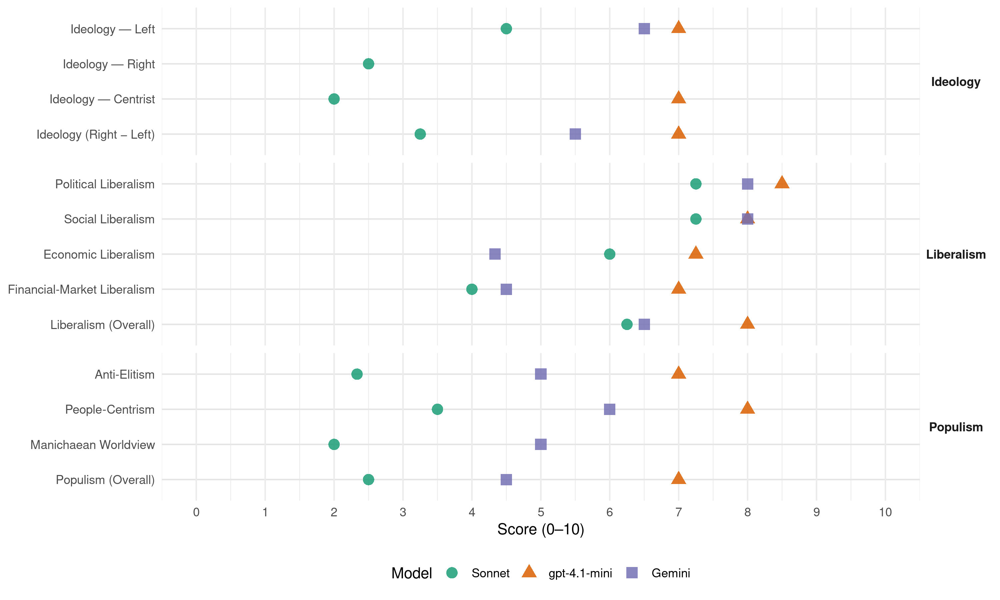

PASOK (Greece, 2009)
manifesto_id 34313_200910
Get full text: This site shows derived annotations and short verbatim quotes only. The full manifesto text is © Manifesto Project / WZB — obtain it via manifesto-project.wzb.eu using the manifesto_id above.
Headline scores
| Dimension | Sonnet | gpt-4.1-mini | Gemini |
|---|---|---|---|
| Populism (Overall) | 2.5 | 7.0 | 4.5 |
| Anti-Elitism | 2.3 | 7.0 | 5.0 |
| People-Centrism | 3.5 | 8.0 | 6.0 |
| Manichaean Worldview | 2.0 | – | 5.0 |
| Ideology (Right − Left) | 3.2 | 7.0 | 5.5 |
| Liberalism (Overall) | 6.2 | 8.0 | 6.5 |
| Political Liberalism | 7.2 | 8.5 | 8.0 |
| Social Liberalism | 7.2 | 8.0 | 8.0 |
| Economic Liberalism | 6.0 | 7.2 | 4.3 |
| Financial-Market Liberalism | 4.0 | 7.0 | 4.5 |
Evidence per dimension
Economic Liberalism
Gemini · score 3.0 · verified · chunk 1
“αυτορρύθμιση της αγοράς, την επικράτηση της επί της πολιτικής”
Το ιδεολόγημα ότι η πρόοδος και η ευημερία διασφαλίζονται με την αυτορρύθμιση της αγοράς, την επικράτηση της επί της πολιτικής, τον περιορισμό
Gemini · score 4.0 · verified · chunk 2
“κατοχύρωση του υγιούς ανταγωνισμού”
Στόχος μας η κατοχύρωση του υγιούς ανταγωνισμού και η αποτροπή της δημιουργίας ολιγοπωλιακών
Gemini · score 6.0 · verified · chunk 3
“κανόνες και ρυθμίσεις που διασφαλίζουν τον υγιή ανταγωνισμό”
της Ευρωπαϊκής Εσωτερικής Αγοράς με κανόνες και ρυθμίσεις που διασφαλίζουν τον υγιή ανταγωνισμό, τα δημόσια κοινωνικά αγαθά
Gemini · score 5.0 · mixed · chunk 4
“υγιή ανταγωνισμό, τα δημόσια κοινωνικά αγαθά”
Εσωτερικής Αγοράς με κανόνες και ρυθμίσεις που διασφαλίζουν τον υγιή ανταγωνισμό, τα δημόσια κοινωνικά αγαθά, την προστασία των καταναλωτών και
gpt-4.1-mini · score 7.0 · verified · chunk 1
“αυτορρύθμιση της αγοράς, τον περιορισμό και την αποδυνάμωση του εποπτικού, αναπτυξιακού και κοινωνικού ρόλου του Κράτους κατέρρευσε”
Το ιδεολόγημα ότι η πρόοδος και η ευημερία διασφαλίζονται με την αυτορρύθμιση της αγοράς, την επικράτηση της επί της πολιτικής, τον περιορισμό και την αποδυνάμωση του εποπτικού, αναπτυξιακού και κοινωνικού ρόλου του Κράτους κατέρρευσε κάτω από το βάρος των οικονομικών και κοινωνικών αδιεξόδων, των μεγάλων ανισοτήτων και της γενικευμένης κρίσης που προκάλεσε.
gpt-4.1-mini · score 8.0 · verified · chunk 2
“Η πράσινη ανάπτυξη εκτιμάται ότι μπορεί να αποφέρει τουλάχιστον 250.000 νέες θέσεις εργασίας”
3.1. ΠΛΗΡΗΣ ΑΠΑΣΧΟΛΗΣΗ ΚΑΙ ΑΞΙΟΠΡΕΠΗΣ ΕΡΓΑΣΙΑ ΓΙΑ ΟΛΟΥΣ Δεν μπορεί να υπάρξει βιώσιμη ανάπτυξη χωρίς αξιοπρεπή εργασία για όλους και χωρίς ένα σύγχρονο κοινωνικό κράτος, και κανένα κοινωνικό κράτος δεν είναι οικονομικά βιώσιμο χωρίς την πλήρη και αξιοπρεπή απασχόληση. ΔΗΜΙΟΥΡΓΟΥΜΕ ΝΕΕΣ ΘΕΣΕΙΣ ΕΡΓΑΣΙΑΣ ΜΕ ΤΗΝ ΠΡΑΣΙΝΗ ΑΝΑΠΤΥΞΗ Η πράσινη ανάπτυξη εκτιμάται ότι μπορεί να αποφέρει τουλάχιστον 250.000 νέες θέσεις εργασίας στην Ελλάδα την επόμενη δεκαετία, αν σήμερα αποφασίσουμε να κάνουμε τις επιβαλλόμενες επενδύσεις σε βασικούς τομείς όπως είναι οι ανανεώσιμες πηγές ενέργειας, ο κτιριακός και κατασκευαστικός τομέας, η διαχείριση των απορριμμάτων, η γεωργία και ο τουρισμός.
gpt-4.1-mini · score 7.0 · verified · chunk 3
“Εφαρμόζεται πλήρως και με απόλυτη συνέπεια η συνταγματική αρχή ότι η άσκηση των αρμοδιοτήτων της Αυτοδιοίκησης συνοδεύεται από την εξασφάλιση των αναγκαίων οικονομικών πόρων”
Η φορολογική αποκέντρωση θα συνοδεύεται από διοικητικούς και κοινωνικούς μηχανισμούς ελέγχου της διαχείρισης των πόρων της Αυτοδιοίκησης. Δημιουργείται Ταμείο Συνοχής για την υποστήριξη των αδύναμων ΟΤΑ. Καταργείται το ισχύον εκλογικό σύστημα με την προϋπόθεση του 42% και επανέρχεται το προηγούμενο εκλογικό σύστημα και για τους δύο βαθμούς Αυτοδιοίκησης.
gpt-4.1-mini · score 7.0 · verified · chunk 4
“τη λειτουργία της Ευρωπαϊκής Εσωτερικής Αγοράς με κανόνες και ρυθμίσεις που διασφαλίζουν τον υγιή ανταγωνισμό”
…Κατοχυρώνει και ενισχύει τα κοινωνικά δικαιώματα και τις συλλογικές διαπραγματεύσεις σε εθνικό και Ευρωπαϊκό επίπεδο. τη λειτουργία της Ευρωπαϊκής Εσωτερικής Αγοράς με κανόνες και ρυθμίσεις που διασφαλίζουν τον υγιή ανταγωνισμό, τα δημόσια κοινωνικά αγαθά, την προστασία των καταναλωτών και του περιβάλλοντος. την κατοχύρωση μιας σύγχρονης , βιώσιμης Κοινής Αγροτικής Πολιτικής…
Sonnet · score 5.0 · mixed · chunk 1
“αυτορρύθμιση της αγοράς”
ότι η πρόοδος και η ευημερία διασφαλίζονται με την αυτορρύθμιση της αγοράς, την επικράτηση της επί της πολιτικής
Sonnet · score 4.0 · mixed · chunk 2
“εγγενής αποτυχία των αγορών στην αντιμετώπιση των περιβαλλοντικών προβλημάτων”
Η εγγενής αποτυχία των αγορών στην αντιμετώπιση των περιβαλλοντικών προβλημάτων επιβάλλει την παρέμβαση του κράτους.
Sonnet · score 6.0 · verified · chunk 3
“λειτουργία της Ευρωπαϊκής Εσωτερικής Αγοράς με κανόνες και ρυθμίσεις που διασφαλίζουν τον υγιή ανταγωνισμό”
τη λειτουργία της Ευρωπαϊκής Εσωτερικής Αγοράς με κανόνες και ρυθμίσεις που διασφαλίζουν τον υγιή ανταγωνισμό, τα δημόσια κοινωνικά αγαθά, την προστασία των καταναλωτών και του περιβάλλοντος.
Sonnet · score 5.0 · mixed · chunk 4
“υγιή ανταγωνισμό, τα δημόσια κοινωνικά αγαθά”
λειτουργία της Ευρωπαϊκής Εσωτερικής Αγοράς με κανόνες και ρυθμίσεις που διασφαλίζουν τον υγιή ανταγωνισμό, τα δημόσια κοινωνικά αγαθά
Financial-Market Liberalism
Gemini · score 4.0 · verified · chunk 1
“αποτελεσματική εποπτεία και έλεγχο των αγορών χρήματος”
προϋποθέτει αποτελεσματική εποπτεία και έλεγχο των αγορών χρήματος και κεφαλαίου, καθώς και διασφάλιση
Gemini · score 5.0 · verified · chunk 2
“παροχή χρηματοπιστωτικών υπηρεσιών”
Ταχυδρομικό Ταμιευτήριο όσον αφορά στην παροχή χρηματοπιστωτικών υπηρεσιών, οργανώνονται με βιώσιμο
gpt-4.1-mini · score 7.0 · verified · chunk 1
“Ανεξάρτητη, ισχυρή και αποτελεσματική εποπτεία σε όλο το χρηματοοικονομικό σύστημα.”
Για το ΠΑΣΟΚ, η νέα αρχιτεκτονική του Χρηματοοικονομικού Συστήματος προϋποθέτει αποτελεσματική εποπτεία και έλεγχο των αγορών χρήματος και κεφαλαίου, καθώς και διασφάλιση συνθηκών σταθερότητας και υγιούς ανταγωνισμού. Βασικός στόχος είναι το Χρηματοοικονομικό Σύστημα να λειτουργεί, με πλήρη διαφάνεια, ως μοχλός χρηματοδότησης και ανάπτυξης της Ελληνικής Οικονομίας, στην υπηρεσία του πολίτη. Να περιορίζει τη μετάδοση κινδύνων από τις αγορές χρήματος και κεφαλαίου στην πραγματική οικονομία και να συντελεί στην προστασία του παραγωγικού και κοινωνικού ιστού της χώρας.
Sonnet · score 5.0 · mixed · chunk 1
“εποπτεία σε όλο το χρηματοοικονομικό σύστημα”
Ανεξάρτητη, ισχυρή και αποτελεσματική εποπτεία σε όλο το χρηματοοικονομικό σύστημα. Κανένα προϊόν και καμία περιοχή
Sonnet · score 4.0 · verified · chunk 2
“μεικτό σχήμα δημόσιων και ιδιωτικών κεφαλαίων”
Για την Ολυμπιακή, προκρίνουμε ένα μεικτό σχήμα δημόσιων και ιδιωτικών κεφαλαίων και με διεθνείς στρατηγικές συνεργασίες.
Political Liberalism
Gemini · score 8.0 · verified · chunk 1
“τη δημοκρατία, την ελευθερία, τη λαϊκή κυριαρχία”
Την ειρήνη, τη δημοκρατία, την ελευθερία, τη λαϊκή κυριαρχία και την ισότητα, την αλληλεγγύη
Gemini · score 8.0 · verified · chunk 2
“θεμελιώδη συνιστώσα της Δημοκρατίας”
Το Κοινωνικό Κράτος αποτελεί θεμελιώδη συνιστώσα της Δημοκρατίας, δημόσια υποχρέωση και λειτουργία
Gemini · score 8.0 · verified · chunk 3
“ενίσχυση των δημοκρατικών θεσμών, η αποκατάσταση”
διοίκησης και της αυτοδιοίκησης, η ενίσχυση των δημοκρατικών θεσμών, η αποκατάσταση της ανεξαρτησίας της δικαιοσύνης, η ενδυνάμωση
Gemini · score 8.0 · verified · chunk 4
“Ευρώπη της Δημοκρατίας και της Συμμετοχής”
φωνή, παρουσία και κύρος στην Ευρώπη. Υποστηρίζουμε σταθερά την Ευρώπη της Δημοκρατίας και της Συμμετοχής, της Πράσινης Ανάπτυξης, της Αλληλεγγύης
gpt-4.1-mini · score 8.0 · verified · chunk 1
“Η ψήφος στο ΠΑΣΟΚ στις 4 Οκτωβρίου θα ανοίξει το δρόμο για τη Δημοκρατική και Κοινωνική Αλλαγή.”
Σήμερα, με το Πρόγραμμα μας δεσμευόμαστε απέναντι σε κάθε Έλληνα, σε κάθε Ελληνίδα. Τώρα είναι η ώρα να πάμε μπροστά. Η ψήφος στο ΠΑΣΟΚ στις 4 Οκτωβρίου θα ανοίξει το δρόμο για τη Δημοκρατική και Κοινωνική Αλλαγή.
gpt-4.1-mini · score 9.0 · verified · chunk 2
“Το Κοινωνικό Κράτος αποτελεί θεμελιώδη συνιστώσα της Δημοκρατίας”
3. ΙΣΧΥΡΟ ΚΑΙ ΑΠΟΤΕΛΕΣΜΑΤΙΚΟ ΚΟΙΝΩΝΙΚΟ ΚΡΑΤΟΣ Το Κοινωνικό Κράτος αποτελεί θεμελιώδη συνιστώσα της Δημοκρατίας, δημόσια υποχρέωση και λειτουργία που διασφαλίζει τα κοινωνικά δικαιώματα, ίσες ευκαιρίες για όλους, ποιοτικές υπηρεσίες και δομές αλληλεγγύης.
gpt-4.1-mini · score 9.0 · verified · chunk 3
“ενίσχυση των δημοκρατικών θεσμών, η αποκατάσταση της ανεξαρτησίας της δικαιοσύνης”
Απαιτείται η ανασύνταξη του κράτους, της διοίκησης και της αυτοδιοίκησης, η ενίσχυση των δημοκρατικών θεσμών, η αποκατάσταση της ανεξαρτησίας της δικαιοσύνης, η ενδυνάμωση των ανεξάρτητων αρχών. Απαιτείται ένα σχέδιο ριζικών αλλαγών για την αντιμετώπιση της διαφθοράς, την εμπέδωση όρων διαφάνειας και λογοδοσίας στην άσκηση της εξουσίας και την αποκατάσταση της αυτονομίας του πολιτικού συστήματος.
gpt-4.1-mini · score 8.0 · verified · chunk 4
“Υποστηρίζουμε σταθερά την Ευρώπη της Δημοκρατίας και της Συμμετοχής”
…Ευρωπαϊκής στρατηγικής της χώρας μας, ώστε να ξαναβρεί ισχυρή φωνή, παρουσία και κύρος στην Ευρώπη. Υποστηρίζουμε σταθερά την Ευρώπη της Δημοκρατίας και της Συμμετοχής, της Πράσινης Ανάπτυξης, της Αλληλεγγύης, της Οικονομικής και Κοινωνικής Συνοχής. Την Ευρώπη της πολυμορφίας και του πολιτισμού που σέβεται και ενδυναμώνεται μέσα από τις πολιτιστικές, θρησκευτικές και εθνικές παραδόσεις των λαών της. Την Ευρώπη που διαδραματίζει ισχυρό ρόλο στη διεθνή σκηνή για την ειρήνη, τη συνεργασία και την ρύθμιση της παγκοσμιοποίησης…
Sonnet · score 7.0 · verified · chunk 1
“εκδημοκρατισμό της αναπτυξιακής διαδικασίας”
ενίσχυση του ρόλου της Αυτοδιοίκησης και τον εκδημοκρατισμό της αναπτυξιακής διαδικασίας. Απαιτούν την οικοδόμηση
Sonnet · score 7.0 · verified · chunk 2
“Δημοσιοποίηση όλων των στοιχείων και ενεργειών του δημοσίου και έλεγχος στο κοινοβούλιο”
Παροχή επιστημονικής υποστήριξης στο δημόσιο και πληροφορίας προς τους πολίτες. Δημοσιοποίηση όλων των στοιχείων και ενεργειών του δημοσίου και έλεγχος στο κοινοβούλιο.
Sonnet · score 8.0 · verified · chunk 3
“ενίσχυση των δημοκρατικών θεσμών, η αποκατάσταση της ανεξαρτησίας της δικαιοσύνης”
Απαιτείται η ανασύνταξη του κράτους, της διοίκησης και της αυτοδιοίκησης, η ενίσχυση των δημοκρατικών θεσμών, η αποκατάσταση της ανεξαρτησίας της δικαιοσύνης, η ενδυνάμωση των ανεξάρτητων αρχών.
Sonnet · score 7.0 · verified · chunk 4
“αναβάθμιση του ρόλου του Ευρωπαϊκού Κοινοβουλίου”
την αναβάθμιση του ρόλου του Ευρωπαϊκού Κοινοβουλίου και των Εθνικών Κοινοβουλίων και την αξιοποίηση των ρυθμίσεων
Liberalism (Overall)
Gemini · score 6.0 · verified · chunk 1
“τη δημοκρατία, την ελευθερία, τη λαϊκή κυριαρχία”
Την ειρήνη, τη δημοκρατία, την ελευθερία, τη λαϊκή κυριαρχία και την ισότητα, την αλληλεγγύη
Gemini · score 6.0 · verified · chunk 2
“θεμελιώδη συνιστώσα της Δημοκρατίας”
Το Κοινωνικό Κράτος αποτελεί θεμελιώδη συνιστώσα της Δημοκρατίας, δημόσια υποχρέωση και λειτουργία
Gemini · score 7.0 · verified · chunk 3
“ενίσχυση των δημοκρατικών θεσμών, η αποκατάσταση”
διοίκησης και της αυτοδιοίκησης, η ενίσχυση των δημοκρατικών θεσμών, η αποκατάσταση της ανεξαρτησίας της δικαιοσύνης, η ενδυνάμωση
Gemini · score 7.0 · verified · chunk 4
“Ευρώπη της Δημοκρατίας και της Συμμετοχής”
φωνή, παρουσία και κύρος στην Ευρώπη. Υποστηρίζουμε σταθερά την Ευρώπη της Δημοκρατίας και της Συμμετοχής, της Πράσινης Ανάπτυξης, της Αλληλεγγύης
gpt-4.1-mini · score 8.0 · verified · chunk 1
“Η ψήφος στο ΠΑΣΟΚ στις 4 Οκτωβρίου θα ανοίξει το δρόμο για τη Δημοκρατική και Κοινωνική Αλλαγή.”
Σήμερα, με το Πρόγραμμα μας δεσμευόμαστε απέναντι σε κάθε Έλληνα, σε κάθε Ελληνίδα. Τώρα είναι η ώρα να πάμε μπροστά. Η ψήφος στο ΠΑΣΟΚ στις 4 Οκτωβρίου θα ανοίξει το δρόμο για τη Δημοκρατική και Κοινωνική Αλλαγή.
gpt-4.1-mini · score 9.0 · verified · chunk 2
“Το Κοινωνικό Κράτος αποτελεί θεμελιώδη συνιστώσα της Δημοκρατίας”
3. ΙΣΧΥΡΟ ΚΑΙ ΑΠΟΤΕΛΕΣΜΑΤΙΚΟ ΚΟΙΝΩΝΙΚΟ ΚΡΑΤΟΣ Το Κοινωνικό Κράτος αποτελεί θεμελιώδη συνιστώσα της Δημοκρατίας, δημόσια υποχρέωση και λειτουργία που διασφαλίζει τα κοινωνικά δικαιώματα, ίσες ευκαιρίες για όλους, ποιοτικές υπηρεσίες και δομές αλληλεγγύης.
gpt-4.1-mini · score 8.0 · verified · chunk 3
“ενίσχυση των δημοκρατικών θεσμών, η αποκατάσταση της ανεξαρτησίας της δικαιοσύνης”
Απαιτείται η ανασύνταξη του κράτους, της διοίκησης και της αυτοδιοίκησης, η ενίσχυση των δημοκρατικών θεσμών, η αποκατάσταση της ανεξαρτησίας της δικαιοσύνης, η ενδυνάμωση των ανεξάρτητων αρχών. Απαιτείται ένα σχέδιο ριζικών αλλαγών για την αντιμετώπιση της διαφθοράς, την εμπέδωση όρων διαφάνειας και λογοδοσίας στην άσκηση της εξουσίας και την αποκατάσταση της αυτονομίας του πολιτικού συστήματος.
gpt-4.1-mini · score 7.0 · verified · chunk 4
“Υποστηρίζουμε σταθερά την Ευρώπη της Δημοκρατίας και της Συμμετοχής”
…Ευρωπαϊκής στρατηγικής της χώρας μας, ώστε να ξαναβρεί ισχυρή φωνή, παρουσία και κύρος στην Ευρώπη. Υποστηρίζουμε σταθερά την Ευρώπη της Δημοκρατίας και της Συμμετοχής, της Πράσινης Ανάπτυξης, της Αλληλεγγύης, της Οικονομικής και Κοινωνικής Συνοχής…
Sonnet · score 6.0 · verified · chunk 1
“διαφάνεια στη λήψη αποφάσεων”
τη διαφάνεια στη λήψη αποφάσεων και στην εφαρμογή των πολιτικών, καθώς και την κοινωνική λογοδοσία
Sonnet · score 6.0 · verified · chunk 2
“σύμφωνο συμβίωσης αναγνωρισμένη νομική μορφή ελεύθερης επιλογής συμβίωσης ανεξάρτητα από φύλο”
Το σύμφωνο συμβίωσης αναγνωρισμένη νομική μορφή ελεύθερης επιλογής συμβίωσης ανεξάρτητα από φύλο.
Sonnet · score 7.0 · verified · chunk 3
“ενίσχυση των δημοκρατικών θεσμών, η αποκατάσταση της ανεξαρτησίας της δικαιοσύνης”
Απαιτείται η ανασύνταξη του κράτους, της διοίκησης και της αυτοδιοίκησης, η ενίσχυση των δημοκρατικών θεσμών, η αποκατάσταση της ανεξαρτησίας της δικαιοσύνης, η ενδυνάμωση των ανεξάρτητων αρχών.
Sonnet · score 6.0 · verified · chunk 4
“Ευρώπη της Δημοκρατίας και της Συμμετοχής”
Υποστηρίζουμε σταθερά την Ευρώπη της Δημοκρατίας και της Συμμετοχής, της Πράσινης Ανάπτυξης, της Αλληλεγγύης
Anti-Elitism
Gemini · score 6.0 · verified · chunk 1
“να σπάσουμε κατεστημένα, νοοτροπίες, αντιλήψεις”
Έχουμε την τόλμη, και την αποφασιστικότητα να σπάσουμε κατεστημένα, νοοτροπίες, αντιλήψεις που κρατάνε την χώρα μας καθηλωμένη.
Gemini · score 4.0 · verified · chunk 3
“Για εξάλειψη του κομματισμού, αξιοκρατία”
πολιτικής. Το ΠΑΣΟΚ αναλαμβάνει την ευθύνη: Για εξάλειψη του κομματισμού, αξιοκρατία σε όλα τα επίπεδα, διαφάνεια και αποτελεσματικότητα
gpt-4.1-mini · score 7.0 · verified · chunk 1
“Η διακυβέρνηση της Ν.Δ τα τελευταία έξι χρόνια γύρισε τη χώρα πίσω”
Η διακυβέρνηση της Ν.Δ τα τελευταία έξι χρόνια γύρισε τη χώρα πίσω, μας οδήγησε σε οικονομική και κοινωνική κρίση πριν τη διεθνή κρίση, άφησε τους πολίτες απροστάτευτους, την κοινωνία ανοχύρωτη και την οικονομία σε αδιέξοδο.
Sonnet · score 5.0 · mixed · chunk 1
“μικροκομματικά ή ισχυρά συμφέροντα λίγων”
υπηρετούν τον πολίτη, και όχι μικροκομματικά ή ισχυρά συμφέροντα λίγων. Έχουμε την τόλμη
Sonnet · score 2.0 · verified · chunk 2
“κατάργηση των νόμων της ΝΔ που καταστρατηγούν”
Η κατάργηση των νόμων της ΝΔ που καταστρατηγούν και περιορίζουν τη συλλογική αυτονομία, τα εργασιακά και κοινωνικά δικαιώματα.
Sonnet · score 3.0 · verified · chunk 3
“ανεξαρτησία της από επιχειρηματικά, επικοινωνιακά και άλλα κέντρα αθέμιτου επηρεασμού”
την ενίσχυση της αυτονομίας της πολιτικής, και την ανεξαρτησία της από επιχειρηματικά, επικοινωνιακά και άλλα κέντρα αθέμιτου επηρεασμού, την εξασφάλιση
Sonnet · score 2.0 · verified · chunk 4
“ανυπαρξία εξωτερικής πολιτικής της Κυβέρνησης της Ν.Δ.”
να αποκαταστήσει το διεθνές κύρος της χώρας, που πλήττεται από την ανυπαρξία εξωτερικής πολιτικής της Κυβέρνησης της Ν.Δ.
Ideology — Centrist
gpt-4.1-mini · score 7.0 · verified · chunk 1
“Το ΠΑΣΟΚ είναι κόμμα της Δημοκρατίας και του Σοσιαλισμού. Κόμμα Πατριωτικό, με οικουμενικές αξίες.”
Το ΠΑΣΟΚ είναι κόμμα της Δημοκρατίας και του Σοσιαλισμού. Κόμμα Πατριωτικό, με οικουμενικές αξίες. Αυτή είναι η ταυτότητα μας – αυτός είναι ο οδηγός μας.
Sonnet · score 3.0 · verified · chunk 1
“πρώτα ο πολίτης”
Πλαίσιο Κυβερνητικού Προγράμματος: Συνοπτική παρουσίαση Οκτώβριος 2009 - πρώτα ο πολίτης
Sonnet · score 1.0 · verified · chunk 2
“ίσες ευκαιρίες για όλους”
Το Κοινωνικό Κράτος αποτελεί θεμελιώδη συνιστώσα της Δημοκρατίας, δημόσια υποχρέωση και λειτουργία που διασφαλίζει τα κοινωνικά δικαιώματα, ίσες ευκαιρίες για όλους.
Sonnet · score 2.0 · verified · chunk 3
“κράτος στην υπηρεσία του πολίτη”
ΠΟΛΙΤΙΚΟ ΣΥΣΤΗΜΑ ΚΑΙ ΚΡΑΤΟΣ ΣΤΗΝ ΥΠΗΡΕΣΙΑ ΤΟΥ ΠΟΛΙΤΗ Η ριζική ανασύνταξη του κράτους
Sonnet · score 2.0 · verified · chunk 4
“εκδημοκρατισμό της παγκοσμιοποίησης”
η Κυβέρνηση του ΠΑΣΟΚ, θα εργαστεί συστηματικά για τον εκδημοκρατισμό της παγκοσμιοποίησης
Ideology — Left
Gemini · score 8.0 · verified · chunk 1
“πραγματοποιήσουμε μια δίκαιη κοινωνική αναδιανομή”
Στόχος μας είναι να δώσουμε ζωή στην οικονομία και να πραγματοποιήσουμε μια δίκαιη κοινωνική αναδιανομή.
Gemini · score 5.0 · verified · chunk 3
“κατοχύρωση της Κοινωνικής Ευρώπης που διασφαλίζει”
πράσινη ανάπτυξη. τη θέσπιση ενός Ευρωπαϊκού Σύμφωνου, κατοχύρωση της Κοινωνικής Ευρώπης που διασφαλίζει την πλήρη απασχόληση, την κοινωνική προστασία
gpt-4.1-mini · score 7.0 · verified · chunk 1
“σχέδιο Εθνικής Ανάτασης που θέτει στόχους, δίνει όραμα αλλά και άμεσες λύσεις”
Δεν αρκούν αποσπασματικά μέτρα. Χρειάζεται ολοκληρωμένο σχέδιο, σχέδιο Εθνικής Ανάτασης που θέτει στόχους, δίνει όραμα αλλά και άμεσες λύσεις σε όλο το φάσμα της καθημερινότητας του πολίτη.
Sonnet · score 6.0 · verified · chunk 1
“κοινωνική δικαιοσύνη και την περιβαλλοντική προστασία”
εξασφαλίζει ταυτόχρονα την οικονομική ανάπτυξη, την κοινωνική δικαιοσύνη και την περιβαλλοντική προστασία
Sonnet · score 5.0 · verified · chunk 2
“Λέμε όχι στην ιδιωτικοποίηση των λιμένων”
Ενισχύουμε το ρόλο των δημόσιων λιμενικών αρχών ως παράγοντα διασφάλισης του δημόσιου συμφέροντος στην παροχή λιμενικών υπηρεσιών. Λέμε όχι στην ιδιωτικοποίηση των λιμένων.
Sonnet · score 4.0 · verified · chunk 3
“κατοχύρωση της κοινωνικής δικαιοσύνης”
που αποτελεί προϋπόθεση για τη στήριξη της πράσινης ανάπτυξης, την κατοχύρωση της κοινωνικής δικαιοσύνης, την επένδυση στην παιδεία, την υγεία
Sonnet · score 3.0 · verified · chunk 4
“αγώνα για Δίκαιο Εμπόριο κι όχι απλά Ελεύθερο Εμπόριο”
τον αγώνα για Δίκαιο Εμπόριο κι όχι απλά Ελεύθερο Εμπόριο, τον αγώνα για αξιοπρεπείς θέσεις εργασίας
Ideology (Right − Left)
Gemini · score 7.0 · verified · chunk 1
“πραγματοποιήσουμε μια δίκαιη κοινωνική αναδιανομή”
Στόχος μας είναι να δώσουμε ζωή στην οικονομία και να πραγματοποιήσουμε μια δίκαιη κοινωνική αναδιανομή.
Gemini · score 4.0 · verified · chunk 3
“κατοχύρωση της Κοινωνικής Ευρώπης που διασφαλίζει”
πράσινη ανάπτυξη. τη θέσπιση ενός Ευρωπαϊκού Σύμφωνου, κατοχύρωση της Κοινωνικής Ευρώπης που διασφαλίζει την πλήρη απασχόληση, την κοινωνική προστασία
gpt-4.1-mini · score 7.0 · verified · chunk 1
“Το ΠΑΣΟΚ είναι κόμμα της Δημοκρατίας και του Σοσιαλισμού. Κόμμα Πατριωτικό, με οικουμενικές αξίες.”
Το ΠΑΣΟΚ είναι κόμμα της Δημοκρατίας και του Σοσιαλισμού. Κόμμα Πατριωτικό, με οικουμενικές αξίες. Αυτή είναι η ταυτότητα μας – αυτός είναι ο οδηγός μας.
Sonnet · score 5.0 · verified · chunk 1
“δίκαιη κοινωνική αναδιανομή”
να δώσουμε ζωή στην οικονομία και να πραγματοποιήσουμε μια δίκαιη κοινωνική αναδιανομή. Έτσι θα δημιουργήσουμε
Sonnet · score 3.0 · verified · chunk 2
“Λέμε όχι στην ιδιωτικοποίηση των λιμένων”
Ενισχύουμε το ρόλο των δημόσιων λιμενικών αρχών ως παράγοντα διασφάλισης του δημόσιου συμφέροντος στην παροχή λιμενικών υπηρεσιών. Λέμε όχι στην ιδιωτικοποίηση των λιμένων.
Sonnet · score 3.0 · verified · chunk 3
“κατοχύρωση της κοινωνικής δικαιοσύνης”
που αποτελεί προϋπόθεση για τη στήριξη της πράσινης ανάπτυξης, την κατοχύρωση της κοινωνικής δικαιοσύνης, την επένδυση στην παιδεία, την υγεία
Sonnet · score 2.0 · verified · chunk 4
“αγώνα για Δίκαιο Εμπόριο κι όχι απλά Ελεύθερο Εμπόριο”
τον αγώνα για Δίκαιο Εμπόριο κι όχι απλά Ελεύθερο Εμπόριο, τον αγώνα για αξιοπρεπείς θέσεις εργασίας
Ideology — Right
Sonnet · score 2.0 · verified · chunk 3
“διαφύλαξη των συνόρων και αποτροπή παράνομης εισόδου μεταναστών”
σεβασμό στα ανθρώπινα δικαιώματα που διασφαλίζονται με την ελληνική και διεθνή νομοθεσία και τις ανθρωπιστικές αξίες, και, δεύτερον, διαφύλαξη των συνόρων και αποτροπή παράνομης εισόδου μεταναστών
Sonnet · score 3.0 · verified · chunk 4
“εθνικό κεφάλαιο για την πατρίδα μας”
Ο Ελληνισμός της Διασποράς αναγνωρίζεται από το Κίνημά μας ως εθνικό κεφάλαιο για την πατρίδα μας
Manichaean Worldview
Gemini · score 5.0 · verified · chunk 1
“όχι μικροκομματικά ή ισχυρά συμφέροντα λίγων”
προτείνουμε δίκαιες και εφικτές λύσεις, που υπηρετούν τον πολίτη, και όχι μικροκομματικά ή ισχυρά συμφέροντα λίγων.
gpt-4.1-mini · score 6.0 · mixed · chunk 1
“Η διακυβέρνηση της Ν.Δ τα τελευταία έξι χρόνια γύρισε τη χώρα πίσω”
Η διακυβέρνηση της Ν.Δ τα τελευταία έξι χρόνια γύρισε τη χώρα πίσω, μας οδήγησε σε οικονομική και κοινωνική κρίση πριν τη διεθνή κρίση, άφησε τους πολίτες απροστάτευτους, την κοινωνία ανοχύρωτη και την οικονομία σε αδιέξοδο.
Sonnet · score 4.0 · verified · chunk 1
“γενικευμένη παρακμή των τελευταίων έξι χρόνων”
Ήρθε η ώρα να βάλουμε τέλος στην γενικευμένη παρακμή των τελευταίων έξι χρόνων. Ήρθε η ώρα να βάλουμε
Sonnet · score 1.0 · verified · chunk 2
“αντιμετώπιση των στρεβλώσεων και η θεραπεία αδικιών”
Αντιμετώπιση των στρεβλώσεων και η θεραπεία αδικιών που έχουν διευρυνθεί τα τελευταία 5 χρόνια.
Sonnet · score 2.0 · verified · chunk 3
“εξάλειψη του κομματισμού, αξιοκρατία σε όλα τα επίπεδα”
Για εξάλειψη του κομματισμού, αξιοκρατία σε όλα τα επίπεδα, διαφάνεια και αποτελεσματικότητα στη διαχείριση των πόρων.
Sonnet · score 1.0 · verified · chunk 4
“αποτέλεσμα στρατιωτικής εισβολής και παράνομης κατοχής”
Το Κυπριακό είναι αποτέλεσμα στρατιωτικής εισβολής και παράνομης κατοχής από την Τουρκία
People-Centrism
Gemini · score 7.0 · verified · chunk 1
“πρώτα ο πολίτης”
Συνοπτική παρουσίαση Οκτώβριος 2009 - πρώτα ο πολίτης oκτωbριοσ 2009 Σε μια περίοδο
Gemini · score 5.0 · verified · chunk 3
“Σεβασμός στην περιουσία του ελληνικού λαού”
αθλητικών προγραμμάτων για ευαίσθητες κοινωνικές ομάδες. Σεβασμός στην περιουσία του ελληνικού λαού. Προστασία του δικαιώματος στην άθληση
gpt-4.1-mini · score 8.0 · verified · chunk 1
“πρώτα ο πολίτης”
Πλαίσιο Κυβερνητικού Προγράμματος: Συνοπτική παρουσίαση Οκτώβριος 2009 - πρώτα ο πολίτης oκτωbριοσ 2009 Σε μια περίοδο ραγδαίων αλλαγών που η Ελλάδα αντιμετωπίζει μια πολύπλευρη πολιτική, οικονομική και κοινωνική κρίση, με αίσθημα ευθύνης και σταθερή πυξίδα τις αρχές μας αναδεικνύουμε το Όραμα μας για το μέλλον.
Sonnet · score 6.0 · verified · chunk 1
“ανθρώπων του μόχθου, των εργαζομένων, των αγροτών”
Όλων εκείνων, που πονάνε αυτόν τον τόπο, των ανθρώπων του μόχθου, των εργαζομένων, των αγροτών, των επιστημόνων
Sonnet · score 3.0 · verified · chunk 2
“ίσες ευκαιρίες για όλους”
Το Κοινωνικό Κράτος αποτελεί θεμελιώδη συνιστώσα της Δημοκρατίας, δημόσια υποχρέωση και λειτουργία που διασφαλίζει τα κοινωνικά δικαιώματα, ίσες ευκαιρίες για όλους, ποιοτικές υπηρεσίες και δομές αλληλεγγύης.
Sonnet · score 3.0 · verified · chunk 3
“κράτος στην υπηρεσία του πολίτη”
ΠΟΛΙΤΙΚΟ ΣΥΣΤΗΜΑ ΚΑΙ ΚΡΑΤΟΣ ΣΤΗΝ ΥΠΗΡΕΣΙΑ ΤΟΥ ΠΟΛΙΤΗ Η ριζική ανασύνταξη του κράτους και του πολιτικού συστήματος
Sonnet · score 2.0 · verified · chunk 4
“συμφέρον του Ελληνισμού της Διασποράς και της χώρας”
να ανταποκριθεί στις προκλήσεις της νέας χιλιετίας με γνώμονα το συμφέρον του Ελληνισμού της Διασποράς και της χώρας
Populism (Overall)
Gemini · score 6.0 · verified · chunk 1
“όχι μικροκομματικά ή ισχυρά συμφέροντα λίγων”
προτείνουμε δίκαιες και εφικτές λύσεις, που υπηρετούν τον πολίτη, και όχι μικροκομματικά ή ισχυρά συμφέροντα λίγων.
Gemini · score 3.0 · verified · chunk 3
“Για εξάλειψη του κομματισμού, αξιοκρατία”
πολιτικής. Το ΠΑΣΟΚ αναλαμβάνει την ευθύνη: Για εξάλειψη του κομματισμού, αξιοκρατία σε όλα τα επίπεδα, διαφάνεια και αποτελεσματικότητα
gpt-4.1-mini · score 7.0 · verified · chunk 1
“Η διακυβέρνηση της Ν.Δ τα τελευταία έξι χρόνια γύρισε τη χώρα πίσω”
Η διακυβέρνηση της Ν.Δ τα τελευταία έξι χρόνια γύρισε τη χώρα πίσω, μας οδήγησε σε οικονομική και κοινωνική κρίση πριν τη διεθνή κρίση, άφησε τους πολίτες απροστάτευτους, την κοινωνία ανοχύρωτη και την οικονομία σε αδιέξοδο.
Sonnet · score 4.0 · verified · chunk 1
“υπηρετούν τον πολίτη, και όχι μικροκομματικά”
προτείνουμε δίκαιες και εφικτές λύσεις, που υπηρετούν τον πολίτη, και όχι μικροκομματικά ή ισχυρά συμφέροντα λίγων
Sonnet · score 2.0 · verified · chunk 2
“κατάργηση των νόμων της ΝΔ που καταστρατηγούν”
Η κατάργηση των νόμων της ΝΔ που καταστρατηγούν και περιορίζουν τη συλλογική αυτονομία, τα εργασιακά και κοινωνικά δικαιώματα.
Sonnet · score 2.0 · verified · chunk 3
“ανεξαρτησία της από επιχειρηματικά, επικοινωνιακά και άλλα κέντρα αθέμιτου επηρεασμού”
την ενίσχυση της αυτονομίας της πολιτικής, και την ανεξαρτησία της από επιχειρηματικά, επικοινωνιακά και άλλα κέντρα αθέμιτου επηρεασμού
Sonnet · score 2.0 · verified · chunk 4
“ανυπαρξία εξωτερικής πολιτικής της Κυβέρνησης της Ν.Δ.”
να αποκαταστήσει το διεθνές κύρος της χώρας, που πλήττεται από την ανυπαρξία εξωτερικής πολιτικής της Κυβέρνησης της Ν.Δ.
Social Liberalism